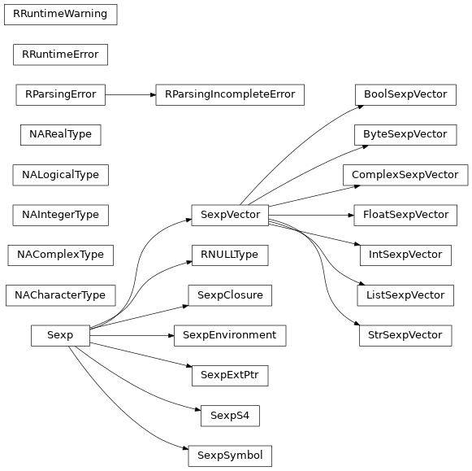

Low-level interface¶
Overview¶
The package rinterface is provided as a lower-level interface,
for situations where either the use-cases addressed by robjects
are not covered, or for the cases where the layer in robjects
has an excessive cost in terms of performance.
The package can be imported with:
>>> import rpy2.rinterface as rinterface
Initialization¶
One has to initialize R before much can be done.
The function initr() lets one initialize
the embedded R.
This is done with the function initr().
>>> rinterface.initr()
Initialization should only be performed once.
To avoid unpredictable results when using the embedded R,
subsequent calls to initr() will not have any effect.
The functions get_initoptions() and set_initoptions()
can be used to modify the options.
Default parameters for the initialization are otherwise
in the module variable initoptions.
Warning
Currently the set of default initialization option contains –vanilla,
which implies that R_LIBS, whenever set, is ignored.
The initialization options will have to be set _before_ the R
is started.
This can be achieved very simply by added the following lines before initializing
the embedded R, or importing rpy2.robjects as this action performs an initialization.
import rpy2.rinterface
rpy2.rinterface.set_initoptions(('rpy2', '--verbose', '--no-save'))
Note
If calling initr() returns an error stating that
R_HOME is not defined, you should either have the R executable in
your path (PATH on unix-alikes, or Path on Microsoft Windows) or
have the environment variable R_HOME defined.
Should the initialization fail, a mismatch between the version of the R
rpy2 was compiled against and the R rpy2 is run with should be investigated.
The variable rpy2.rinterface.R_BUILD_VERSION contains information
about the R version rpy2 was built against.
rpy2 is relatively independent of R versions, but changes in the R C API
might cause problems.
Ending R¶
Ending the R process is possible, but starting it again with
initr() does appear to lead to an R process that is hardly usable.
For that reason, the use of endr() should be considered
carefully, if at all.
-
rpy2.rinterface.endr()¶ endr(int) -> None
Terminate an embedded R by calling the function Rf_endEmbeddedR(int fatal) in the R’s C-API. 0 (zero) seems to be be a commonly used integer when calling Rf_endEmbeddedR. Note that a terminated R cannot be restarted from the same process.
Note
When writing a GUI for R, a developper may want to either prevent a user to call R quit(), or ensure that specific code is executed before terminating R (for example a confirmation dialog window “do you really want to terminate ?”). This can be done by replacing the callback cleanup with an appropriate function (see Clean up).
R space and Python space¶
When using the RPy2 package, two realms are co-existing: R and Python.
The Sexp_Type objects can be considered as Python envelopes pointing
to data stored and administered in the R space.
R variables are existing within an embedded R workspace, and can be accessed from Python through their python object representations.
We distinguish two kind of R objects: named objects and anonymous objects. Named objects have an associated symbol in the R workspace.
Named objects¶
For example, the following R code is creating two objects, named x and hyp respectively, in the global environment. Those two objects could be accessed from Python using their names.
x <- c(1,2,3)
hyp <- function(x, y) sqrt(x^2 + y^2)
Two environments are provided as rpy2.rinterface.SexpEnvironment
globalenv
The global environment can be seen as the root (or topmost) environment, and is in fact a list, that is a sequence, of environments.
When an R library (package in R’s terminology) is loaded, is it added to the existing sequence of environments. Unless specified, it is inserted in second position. The first position being always attributed to the global environment. The library is said to be attached to the current search path.
baseenv
The base package has a namespace, that can be accessed as an environment.
Note
Depending on what is in globalenv and on the attached packages, base objects can be masked when starting the search from globalenv. Use baseenv when you want to be sure to access a function you know to be in the base namespace.
Anonymous objects¶
Anonymous R objects do not have an associated symbol, yet are protected from garbage collection.
Such objects can be created when using the constructor for an Sexp* class.
For example:
>>> x = rinterface.IntVector((1,2,3))
creates a fully usable R vector, but it does not have an associtated R symbol (it is in memory, but cannot be called by name fomr R). It is also protected from garbage collection until, until x is deleted and the Python garbage collector destroys x.
Note
To finalize the recovery of the memory used, the R garbage collector must be also be called. This should happen automatically while running R code when a threshold of memory usage is reached, but it is also possible to call explicitly both garbage collectors. See Memory management and garbage collection for more details.
Pass-by-value paradigm¶
The root of the R language is functional, with arguments passed by value. R is actually using tricks to lower memory usage, such as only copying an object when needed (that is when the object is modified in a local block), but copies of objects are nevertheless frequent. This can remain unnoticed by a user until large objects are in use or a large number of modification of objects are performed, in which case performance issues may appear. An infamous example is when the column names for a matrix are changed, bringing a system to its knees when the matrix is very large, as the whole matrix ends up being copied.
On the contrary, Python is using pointer objects passed around
through function calls, and since rpy2, is a Python-to-R interface
the Python approach was conserved.
Although being contrived, the example below will illustrate the point. With R, renaming a column is like:
# create a matrix
m <- matrix(1:10, nrow = 2,
dimnames = list(c("1", "2"),
c("a", "b", "c", "d", "e")))
# rename the third column
i <- 3
colnames(m)[i] <- "foo"
With rpy2.rinterface:
# import and initialize
import rpy2.rinterface as ri
ri.initr()
# make a function to rename column i
def rename_col_i(m, i, name):
m.do_slot("dimnames")[1][i] = name
# create a matrix
matrix = ri.baseenv["matrix"]
rlist = ri.baseenv["list"]
m = matrix(ri.baseenv[":"](1, 10),
nrow = 2,
dimnames = rlist(ri.StrSexpVector(("1", "2")),
ri.StrSexpVector(("a", "b", "c", "d", "e"))))
Now we can check that the column names
>>> tuple(m.do_slot("dimnames")[1])
('a', 'b', 'c', 'd', 'e')
And rename the third column (remembering that R vectors are 1-indexed while Python sequences are 0-indexed).
>>> i = 3-1
>>> rename_col_i(m, i, ri.StrSexpVector(("foo", )))
>>> tuple(m.do_slot("dimnames")[1])
('a', 'b', 'foo', 'd', 'e')
Unlike with the R code, neither the matrix or the vector with the column names
are copied. Whenever this is not a good thing, R objects can be copied the
way Python objects are usually copied (using copy.deepcopy(),
Sexp implements Sexp.__deepcopy__()).
Parsing and evaluating R code¶
The R C-level function for parsing an arbitrary string a R code is exposed
as the function parse()
>>> expression = ri.parse('1 + 2')
The resulting expression is a nested list of R statements.
>>> len(expression)
1
>>> len(expression[0])
3
The R code 1 + 2 translates to an expression of length 3: +(1, 2), that is a call to the function + (or rather the symbol associated with the function) with the arguments 1 and 2.
>>> ri.str_typeint(expression[0][0].typeof)
'SYMSXP'
>>> tuple(expression[0][1])
(1.0,)
>>> tuple(expression[0][2])
(2.0,)
Note
The expression must be evaluated if the result from its execution is wanted.
-
rpy2.rinterface.parse()¶ parse(string)
Parse a string as R code.
Calling Python functions from R¶
As could be expected from R’s functional roots, functions are first-class objects. This means that the use of callback functions as passed as parameters is not seldom, and this also means that the Python programmer has to either be able write R code for functions as arguments, or have a way to pass Python functions to R as genuine R functions. That last option is becoming possible, in other words one can write a Python function and expose it to R in such a way that the embedded R engine can use as a regular R function.
As an example, let’s consider the R function optim() that looks for optimal parameters for a given cost function. The cost function should be passed in the call to optim() as it will be repeatedly called as the parameter space is explored, and only Python coding skills are necessary as the code below demonstrates it.
from rpy2.robjects.vectors import FloatVector
from rpy2.robjects.packages import importr
import rpy2.rinterface as ri
stats = importr('stats')
# cost function, callable from R
@ri.rternalize
def cost_f(x):
# Rosenbrock Banana function as a cost function
# (as in the R man page for optim())
x1, x2 = x
return 100 * (x2 - x1 * x1)**2 + (1 - x1)**2
# starting parameters
start_params = FloatVector((-1.2, 1))
# call R's optim() with our cost funtion
res = stats.optim(start_params, cost_f)
For convenience, the code example uses the higher-level interface robjects whenever possible.
The lower-level function rternalize() will take an arbitray
Python function and return an rinterface.SexpClosure instance,
that is a object that can be used by R as a function.
Interactive features¶
The embedded R started from rpy2 is interactive by default, which
means that a number of interactive features present when working
in an interactive R console will be available for use.
Such features can be called explicitly by the rpy2 user, but
can also be triggered indirectly, as some on the R functions will behave
differently when run interactively compared to when run in the so-called
BATCH mode.
Note
However, interactive use may mean the ability to periodically check and process events. This is for example the case with interactive graphics devices or with the HTML-based help system (see Processing interactive events).
I/O with the R console¶
See Console I/O.
Processing interactive events¶
An interactive R session is can start interactive activities that require a continuous monitoring for events. A typical example is the interactive graphical devices (plotting windows), as they can be resized and the information they display is refreshed.
However, to do so the R process must be instructed to process
pending interactive events. This is done by the R console for example,
but rpy2 is designed as a library rather than a threaded R process
running within Python (yet this can be done as shown below).
The way to restore interactivity is to simply call the function
rinterface.process_revents() at regular intervals.
An higher-level interface is available, running the processing of R events in a thread (see Section R event loop).
Classes¶
Sexp¶
The class Sexp is the base class for all R objects.
-
class
rpy2.rinterface.Sexp¶ -
__sexp__¶ Python C capsule wrapping the pointer to the underlying R object (SEXP)
-
named¶ R does not count references for its object. This method returns the NAMED value (an integer). See the R-extensions manual for further details.
-
typeof¶ Internal R type for the underlying R object
>>> letters.typeof 16
-
__deepcopy__(self)¶ Make a deep copy of the object, calling the R-API C function c:function::Rf_duplicate() for copying the R object wrapped.
New in version 2.0.3.
-
do_slot(name)¶ R objects can be given attributes. In R, the function attr lets one access an object’s attribute; it is called
do_slot()in the C interface to R.Parameters: name – string Return type: instance of Sexp>>> matrix = rinterface.globalenv.get("matrix") >>> letters = rinterface.globalenv.get("letters") >>> m = matrix(letters, ncol = 2) >>> [x for x in m.do_slot("dim")] [13, 2] >>>
-
do_slot_assign(name, value)¶ Assign value to the slot with the given name, creating the slot whenver not already existing.
Parameters: - name – string
- value – instance of
Sexp
-
rsame(sexp_obj)¶ Tell whether the underlying R object for sexp_obj is the same or not.
Return type: boolean
-
Underlying R object¶
The underlying R object is a pointer to a c:type::SEXPREC as defined in R’s Rinternals.h. That object is wrapped in a c:type::SexpObj and placed in a Python capsule.
The capsule is providing a relatively safe mechanism to exchange underlying R objects between rpy2 objects.
from rpy2.rinterface import SexpIntVector, SexpFloatVector
vector1=SexpIntVector((1, 2, 3))
vector2=SexpFloatVector((4.0, 5.0, 6.0))
vector1.__sexp__ = vector2.__sexp_
SexpVector¶
Overview¶
In R all scalars are in fact vectors. Anything like a one-value variable is a vector of length 1.
To use again the constant pi:
>>> pi = rinterface.globalenv.get("pi")
>>> len(pi)
1
>>> pi
<rinterface.SexpVector - Python:0x2b20325d2660 / R:0x16d5248>
>>> pi[0]
3.1415926535897931
>>>
The letters of the (western) alphabet are:
>>> letters = rinterface.globalenv.get("letters")
>>> len(letters)
26
>>> LETTERS = rinterface.globalenv.get("LETTERS")
R types¶
R vectors all have a type, sometimes referred to in R as a mode. This information is encoded as an integer by R, but it can sometimes be better for human reader to be able to provide a string.
-
rpy2.rinterface.str_typeint(typeint)¶ Return a string corresponding to a integer-encoded R type.
Parameters: typeint – integer (as returned by Sexp.typeof)Return type: string
Indexing¶
The indexing is working like it would on regular Python tuples or lists. The indexing starts at 0 (zero), which differs from R, where indexing start at 1 (one).
Note
The __getitem__ operator [
is returning a Python scalar. Casting
an SexpVector into a list is only a matter
of either iterating through it, or simply calling
the constructor list().
Common attributes¶
Names
In R, vectors can be named, that is each value in the vector can be given a name (that is be associated a string). The names are added to the other as an attribute (conveniently called names), and can be accessed as such:
>>> options = rinterface.globalenv.get("options")()
>>> option_names = options.do_slot("names")
>>> [x for x in options_names]
Note
Elements in a name vector do not have to be unique. A Python
counterpart is provided as rpy2.rlike.container.TaggedList.
Dim and dimnames
In the case of an array, the names across the respective dimensions of the object are accessible through the slot named dimnames.
Missing values
Note
R also has the notion of missing parameters in function calls. This is a separate concept, and more information about are given in Section Functions.
In R missing the symbol NA represents a missing value. The general rule that R scalars are in fact vectors applies here again, and the following R code is creating a vector of length 1.
x <- NA
The type of NA is logical (boolean), and one can specify a different type with the symbols NA_character_, NA_integer_, NA_real_, and NA_complex_.
In rpy2.rinterface, the symbols can be accessed by through
NA_Character,
NA_Integer,
NA_Real.
Those are singleton instance from respective NA<something>Type classes.
>>> my_naint = rinterface.NAIntegerType()
>>> my_naint is rinterface.NA_Integer
True
>>> my_naint == rinterface.NA_Integer
True
NA values can be present in vectors returned by R functions.
>>> rinterface.baseenv['as.integer'](rinterface.StrSexpVector(("foo",)))[0]
NA_integer_
NA values can have operators implemented, but the results will then be missing values.
>>> rinterface.NA_Integer + 1
NA_integer_
>>> rinterface.NA_Integer * 10
NA_integer_
Warning
Python functions relying on C-level implementations might not be following the same rule for NAs.
>>> x = rinterface.IntSexpVector((1, rinterface.NA_Integer, 2))
>>> sum(x)
3
>>> max(x)
2
>>> min(x)
NA_integer_
This should be preferred way to use R’s NA as those symbol are little
peculiar and cannot be retrieved with SexpEnvironment.get().
Those missing values can also be used with the rpy2.robjects layer
and more documentation about their usage can be found there
(see Missing values).
Constructors
-
class
rpy2.rinterface.SexpVector(obj, sexptype, copy)¶ Bases:
rpy2.rinterface.SexpR object that is a vector. R vectors start their indexing at one, while Python lists or arrays start indexing at zero. In the hope to avoid confusion, the indexing in Python (e.g.,
__getitem__()/__setitem__()) starts at zero.-
index(value[, start[, stop]]) → integer -- return first index of value.Raises ValueError if the value is not present.¶
-
Convenience classes are provided to create vectors of a given type:
-
class
rpy2.rinterface.StrSexpVector¶ Bases:
rpy2.rinterface.SexpVectorR vector of Python strings
-
class
rpy2.rinterface.IntSexpVector¶ Bases:
rpy2.rinterface.SexpVectorR vector of integers (note: integers in R are C-int, not C-long)
-
class
rpy2.rinterface.FloatSexpVector¶ Bases:
rpy2.rinterface.SexpVectorR vector of Python floats (note: double in C)
-
class
rpy2.rinterface.BoolSexpVector¶ Bases:
rpy2.rinterface.SexpVectorR vector of booleans
SexpEnvironment¶
__getitem__() / __setitem__() / __delitem__()¶
The [ operator will only look for a symbol in the environment without looking further in the path of enclosing environments.
The following will return an exception LookupError:
>>> rinterface.globalenv["pi"]
The constant pi is defined in R’s base package, and therefore cannot be found in the Global Environment.
The assignment of a value to a symbol in an environment is as simple as assigning a value to a key in a Python dictionary:
>>> x = rinterface.IntSexpVector([123, ])
>>> rinterface.globalenv["x"] = x
>>> len(x)
1
>>> tuple(rinterface.globalenv)
('x', )
Removing an element can be done like one would do it for a Python dict:
>>> del(rinterface.globalenv['x'])
>>> len(x)
0
Note
Not all R environment are hash tables, and this may influence performances when doing repeated lookups
Note
a copy of the R object is made in the R space.
__iter__()¶
The object is made iter-able.
For example, we take the base name space (that is the environment that contains R’s base objects:
>>> base = rinterface.baseenv
>>> basetypes = [x.typeof for x in base]
Warning
In the current implementation the content of the environment is evaluated only once, when the iterator is created. Adding or removing elements to the environment will not update the iterator (this is a problem, that will be solved in the near future).
get()¶
Whenever a search for a symbol is performed, the whole search path is considered: the environments in the list are inspected in sequence and the value for the first symbol found matching is returned.
Let’s start with an example:
>>> rinterface.globalenv.get("pi")[0]
3.1415926535897931
The constant pi is defined in the package base, that
is always in the search path (and in the last position, as it is
attached first). The call to get() will
look for pi first in globalenv, then in the next environment
in the search path and repeat this until an object is found or the
sequence of environments to explore is exhausted.
We know that pi is in the base namespace and we could have gotten here directly from there:
>>> ri.baseenv.get("pi")[0]
3.1415926535897931
>>> ri.baseenv["pi"][0]
3.1415926535897931
>>> ri.globalenv["pi"][0]
Traceback (most recent call last):
File "<stdin>", line 1, in <module>
LookupError: 'pi' not found
R can look specifically for functions, which is happening when a parsed function call is evaluated. The following example of an R interactive session should demonstrate it:
> mydate <- "hohoho"
> mydate()
Error: could not find function "mydate"
>
> date <- "hohoho"
> date()
[1] "Sat Aug 9 15:27:40 2008"
The base function date is still found, although a non-function object is present earlier on the search path.
The same behavior can be obtained from rpy2
with the optional parameter wantfun (specify that get()
should return an R function).
>>> ri.globalenv["date"] = ri.StrSexpVector(["hohoho", ])
>>> ri.globalenv.get("date")[0]
'hohoho'
>>> ri.globalenv.get("date", wantfun=True)
<rinterface.SexpClosure - Python:0x7f142aa96198 / R:0x16e9500>
>>> date = ri.globalenv.get("date", wantfun=True)
>>> date()[0]
'Sat Aug 9 15:48:42 2008'
R packages as environments¶
In a Python programmer’s perspective, it would be nice to map loaded R packages as modules and provide access to R objects in packages the same way than Python object in modules are accessed.
This is unfortunately not possible in a completely
robust way: the dot character .
can be used for symbol names in R (like pretty much any character), and
this can make an exact correspondance between R and Python names
rather difficult.
rpy uses transformation functions that translates ‘.’ to ‘_’ and back,
but this can lead to complications since ‘_’ can also be used for R symbols
(although this is the approach taken for the high-level interface, see
Section R packages).
There is a way to provide explict access to object in R packages, since loaded packages can be considered as environments. To make it convenient to use, one can consider making a function such as the one below:
def rimport(packname):
""" import an R package and return its environment """
as_environment = rinterface.baseenv['as.environment']
require = rinterface.baseenv['require']
require(rinterface.StrSexpVector(packname),
quiet = rinterface.BoolSexpVector((True, )))
packname = rinterface.StrSexpVector(('package:' + str(packname)))
pack_env = as_environment(packname)
return pack_env
>>> class_env = rimport("class")
>>> class_env['knn']
For example, we can reimplement in Python the R function returning the search path (search).
def rsearch():
""" Return a list of package environments corresponding to the
R search path. """
spath = [ri.globalenv, ]
item = ri.globalenv.enclos()
while not item.rsame(ri.emptyenv):
spath.append(item)
item = item.enclos()
spath.append(ri.baseenv)
return spath
As an other example, one can implement simply a function that
returns from which environment an object called by get() comes
from.
def wherefrom(name, startenv=ri.globalenv):
""" when calling 'get', where the R object is coming from. """
env = startenv
obj = None
retry = True
while retry:
try:
obj = env[name]
retry = False
except LookupError, knf:
env = env.enclos()
if env.rsame(ri.emptyenv):
retry = False
else:
retry = True
return env
>>> wherefrom('plot').do_slot('name')[0]
'package:graphics'
>>> wherefrom('help').do_slot('name')[0]
'package:utils'
Note
Unfortunately this does not generalize to all cases: the base package does not have a name.
>>> wherefrom('get').do_slot('name')[0]
Traceback (most recent call last):
File "<stdin>", line 1, in <module>
LookupError: The object has no such attribute.
Functions¶
A function with a context
In R terminology, a closure is a function (with its enclosing environment). That enclosing environment can be thought of as a context to the function.
Note
Technically, the class SexpClosure corresponds to the R
types CLOSXP, BUILTINSXP, and SPECIALSXP, with only the first one
(CLOSXP) being a closure.
>>> sum = rinterface.globalenv.get("sum")
>>> x = rinterface.IntSexpVector([1,2,3])
>>> s = sum(x)
>>> s[0]
6
Named arguments
Named arguments to an R function can be specified just the way they would be with any other regular Python function.
>>> rnorm = rinterface.globalenv.get("rnorm")
>>> rnorm(rinterface.IntSexpVector([1, ]),
mean = rinterface.IntSexpVector([2, ]))[0]
0.32796768001636134
There are however frequent names for R parameters causing problems: all the names with a dot. using such parameters for an R function will either require to:
- use the special syntax **kwargs on a dictionary with the named parameters
- use the method
rcall().
Order for named parameters
One point where function calls in R can differ from the ones in
Python is that
all parameters in R are passed in the order they are in the call
(no matter whether the parameter is named or not),
while in Python only parameters without a name are passed in order.
Using the class OrdDict in the module rpy2.rlike.container,
together with the method rcall(),
permits calling a function the same way it would in R. For example:
import rpy2.rlike.container as rpc
args = rpc.OrdDict()
args['x'] = rinterface.IntSexpVector([1,2,3])
args[None] = rinterface.IntSexpVector([4,5])
args['y'] = rinterface.IntSexpVector([6, ])
rlist = rinterface.baseenv['list']
rl = rlist.rcall(tuple(args.items()), rinterface.globalenv)
>>> [x for x in rl.do_slot("names")]
['x', '', 'y']
closureEnv
In the example below, we inspect the environment for the function plot, that is the namespace for the package graphics.
>>> plot = rinterface.globalenv.get("plot")
>>> ls = rinterface.globalenv.get("ls")
>>> envplot_list = ls(plot.closureEnv())
>>> [x for x in envplot_ls]
>>>
Missing parameters
In R function calls can contain explicitely missing parameters.
> sum(1,,3)
Error: element 2 is empty;
the part of the args list of 'sum' being evaluated was:
(1, , 3)
This is used when extracting a subset of an array, with a missing parameter interpreted by the extract function [ like all elements across that dimension must be taken.
m <- matrix(1:10, nrow = 5, ncol = 2)
# extract the second column
n <- m[, 2]
# can also be written
n <- "["(m, , 2)
rinterface.MissingArg is a pointer to the singleton rinterface.MissingArgType,
allowing to explicitly pass missing parameters to a function call.
For example, the extraction of the second column of a matrix with R shown above, will write almost identically in rpy2.
import rpy2.rinterface as ri
ri.initr()
matrix = ri.baseenv['matrix']
extract = ri.baseenv['[']
m = matrix(ri.IntSexpVector(range(1, 11)), nrow = 5, ncol = 2)
n = extract(m, ri.MissingArg, 2)
SexpS4¶
Object-Oriented programming in R exists in several flavours, and one of those is called S4. It has its own type at R’s C-API level, and because of that specificity we defined a class. Beside that, the class does not provide much specific features (see the pydoc for the class below).
An instance’s attributes can be accessed through the parent
class Sexp method
do_slot().
-
class
rpy2.rinterface.SexpS4(obj)¶ Bases:
rpy2.rinterface.SexpR object that is an ‘S4 object’.Attributes can be accessed using the method ‘do_slot’.
SexpExtPtr¶
External pointers are intended to facilitate the handling of C or C++ data structures from R. In few words they are pointers to structures external to R. They have been used to implement vectors and arrays in shared memory, or storage-based vectors and arrays.
External pointers also do not obey the pass-by-value rule and can represent a way to implement pointers in R.
Let us consider the following simple example:
ep = rinterface.SexpExtPtr("hohoho")
The Python string is now encapsulated into an R external pointer, and visible as such by the embedded R process.
When thinking of sharing C-level structures between R and Python more involved examples can be considered (here still a simple example):
import ctypes
class Point2D(ctypes.Structure):
_fields_ = [("x", ctypes.c_int),
("y", ctypes.c_int)]
pt = Point2D()
ep = rinterface.SexpExtPtr(pt)
However, this remains a rather academic exercise unless there exists a way to access the data from R; when used in R packages, external pointers have companion functions to manipulate the C-level data structures.
In the case of external pointers and their companion functions and methods
defined by R packages, the rpy2 interface lets a programmer create such external pointers
directly from Python, using ctypes for example.
However, the rpy2 interface allows more than that since a programmer is able to make a Python function accessible to R has is was a function of its own. It is possible to define arbitrary Python data structures as well as functions or methods to operate on them, pass the data structure to R as an external pointer, and expose the functions and methods to R.
-
class
rpy2.rinterface.SexpExtPtr(obj)¶ Bases:
rpy2.rinterface.SexpR object that is an ‘external pointer’, a pointer to a data structure implemented at the C level. SexpExtPtr(extref, tag = None, protected = None)
Class diagram¶
Misc. variables¶
- R_HOME
- R HOME
R_LEN_T_MAX- largest usable integer for indexing R vectors
TRUE/FALSE- R’s TRUE and FALSE
R types¶
Vector types¶
CPLXSXP- Complex
INTSXP- Integer.
LGLSXP- Boolean (logical in the R terminology)
RAWSXP- Raw (bytes) value
REALSXP- Numerical value (float / double)
STRSXP- String
VECSXP- List
LISTSXP- Paired list
LANGSXP- Language object.
EXPRSXP- Unevaluated expression.
Function types¶
CLOSXP- Function with an enclosure. Represented by
rpy2.rinterface.SexpClosure. BUILTINSXP- Base function
SPECIALSXP- Some other kind of function
Other types¶
ENVSXP- Environment. Represented by
rpy2.rinterface.SexpEnvironment. S4SXP- Instance of class S4. Represented by
rpy2.rinterface.SexpS4.
Types one should not meet¶
PROMSXP- Promise.